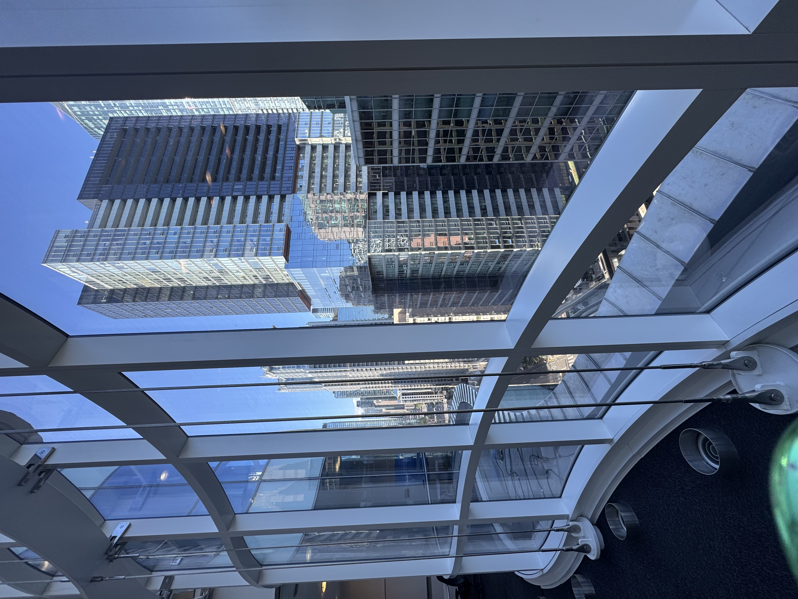
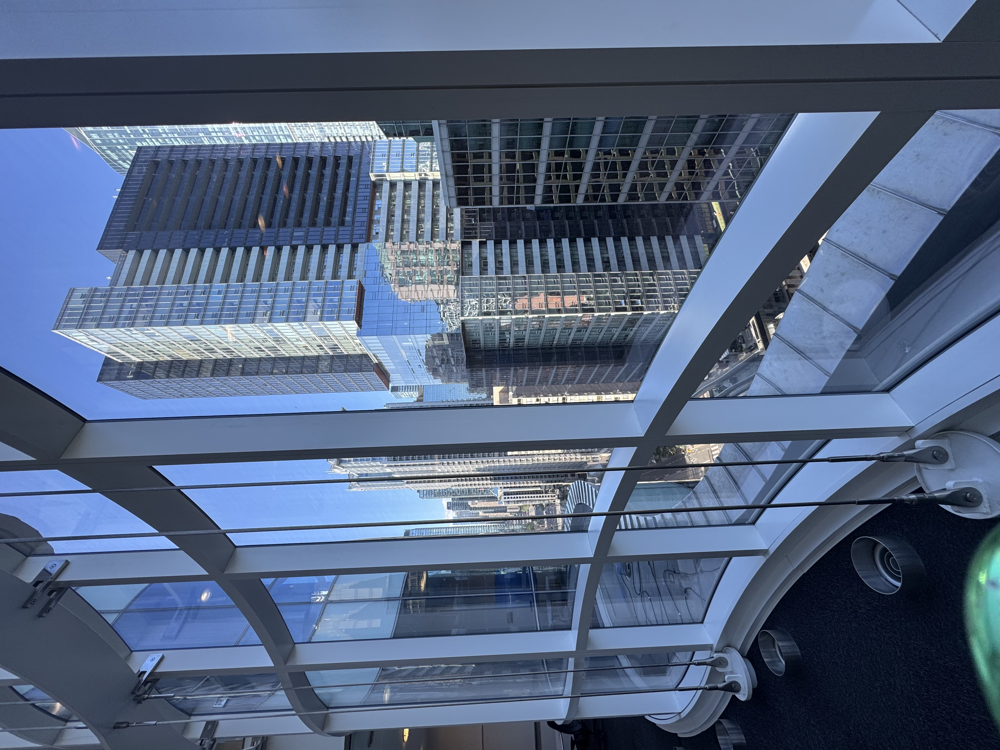
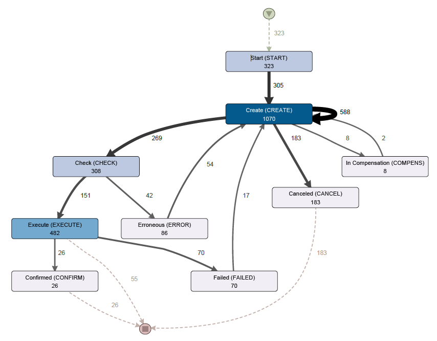
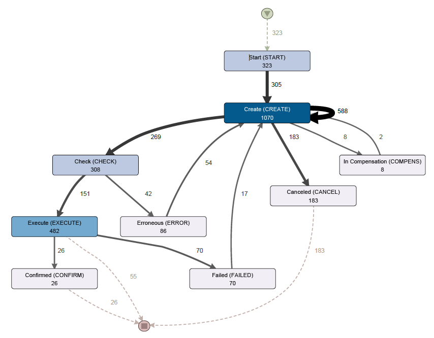
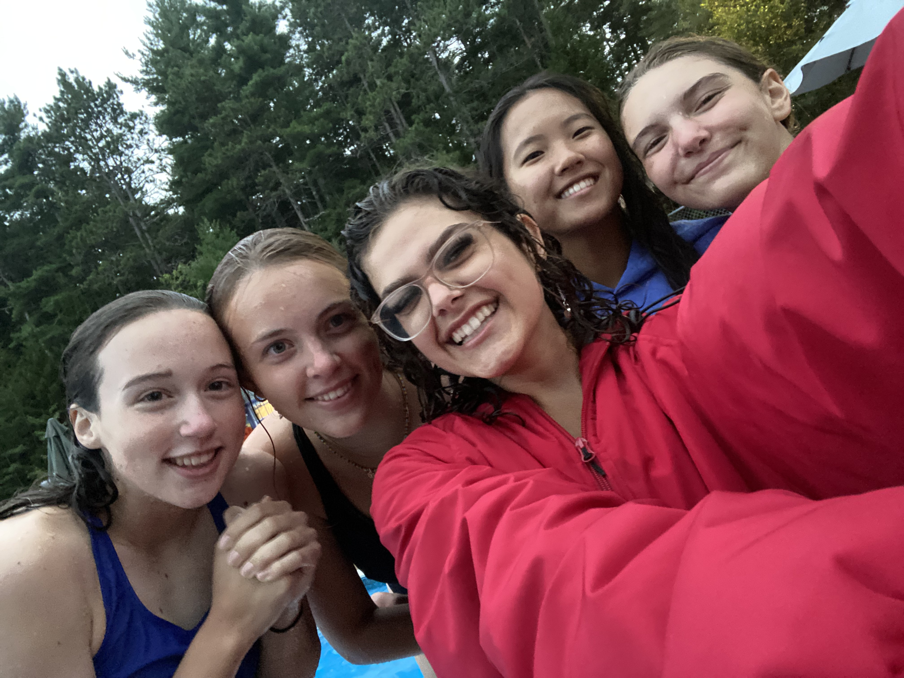
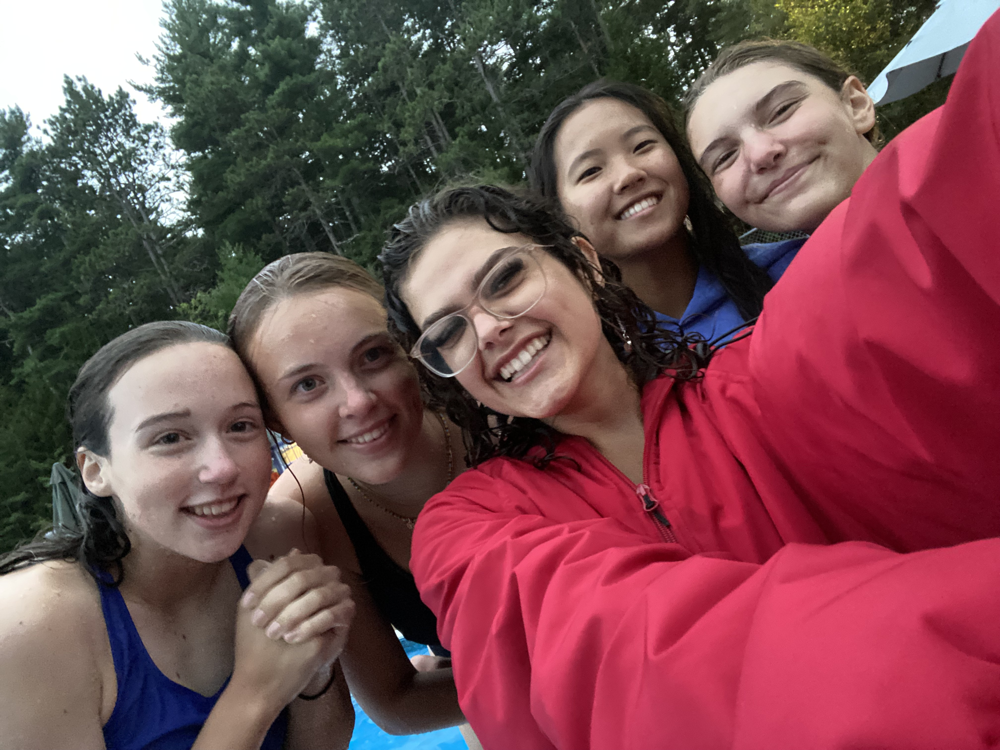

Experience
 

Bioinformatics Software Research Student
The Hospital for Sick Children (SickKids) — Centre for Applied Genomics (Sep. 2025 – Dec. 2025)
Developed a machine learning pipeline to predict risk of cognitive, language, and motor outcomes in preterm infants using demographic, clinical, and MRI data.
Contributed to the design and iteration of a protein language model variant effect predictor, focusing on model interpretability through attention mechanism analysis.

 

Data Science and Process Mining Analyst
During my time as a **Data Science and Process Mining Analyst at Transport Canada**, I led two end-to-end **process mining initiatives** aimed at improving the efficiency of federal workflows. Working with large-scale operational logs, I used **Python-based analytics** to uncover bottlenecks and compliance gaps within administrative processes, translating those insights into actionable recommendations for policy and operations teams.
To support scalable decision-making, I designed a **secure and cost-efficient machine learning pipeline** for classification tasks, reducing manual burden and enabling proactive identification of workflow anomalies. I also developed **process conformance models** and **interactive dashboards**, empowering cross-functional stakeholders to explore data intuitively and implement data-driven improvements. This role strengthened my ability to bridge **technical analysis with strategic impact**, ensuring that complex insights were delivered in a way that informed real change within public sector operations.


Cognitive Engineering Research Assistant
As a Cognitive Engineering Research Intern at the ACE Lab, I focused on enhancing the interaction between humans and complex systems through cognitive principles. My work was centered on two main areas. First, I contributed to the interdisciplinary SENSE-APP project, aimed at developing an app for older drivers in collaboration with another Carleton lab and the National Research Council (NRC). This project sought to assess older drivers' risk using AI models and telematics car data, and then communicate this information to the drivers to help them improve their driving safety and extend their driving years. I analyzed qualitative data from focus groups using QDA Miner, categorizing and tagging the data to identify key themes and quantify their importance, which informed the app's UX/UI design. Additionally, I supported research projects on human-machine interactions in autonomous driving, led by master's students in the lab. I developed experimental setups using Prepar3D to simulate realistic driving scenarios and coded audio stimuli for EEG data collection. I also created a situational awareness task using the Godot game engine to assess participants' recall of hazard scenes for an ongoing study.
 

Manager
As an Assistant Manager in 2022 and Manager in 2023, I oversaw the safety of over 100 patrons daily while running various programs and ensuring their quality. In this role, I managed a team of seven employees, handling scheduling and financial responsibilities. Additionally, I served as a lifeguard, swim instructor, and lifesaving course instructor, running and managing aquatic programs. Recently, I was appointed to the Board of Directors, where I actively contributed to shaping the reopening strategy and the planning and development of a new facility. For more information, please visit our website.

Responder UW Campus Response Team
As a Responder with the University of Waterloo Campus Response Team from October 2023 to the present, I contribute to the safety and well-being of the university community by responding to medical and mental health emergencies during shifts and while on-call. During the winter term of 2024, I served as an Assistant Trainer, where I ran testing sessions and helped organize first aid and crisis management training. This role allowed me to further support and enhance the team's preparedness and effectiveness in handling various emergencies.